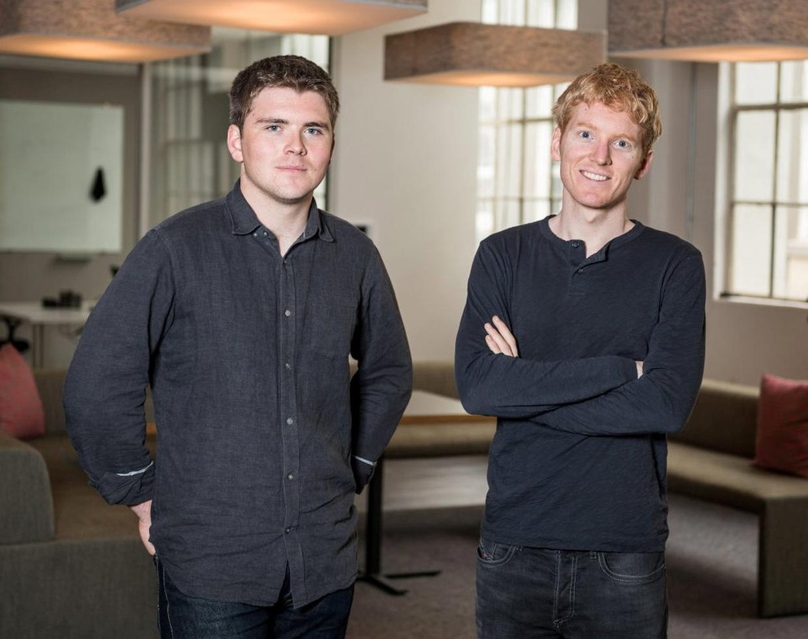
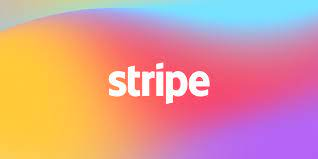

Welcome to my website which I have coded by myself.I have done my project on Irish Brothers Patrick & John Collison.

Early life
Patrick Collison was born in 1988 and his younger brother John was born in 1990 .They lived in a small town called Dromineer in Co. Tipperary.Patrick was very interested in computers especially after he read a book about computer programming. When he was 8 he took a computer course in the University of Limerick and was learning computer programming at the age of 10. John Collison was also interested in computers . When they were both still in secondary school the brothers created Shuppa a software company that they joined with Automatic, which was later sold for €5 million when Patrick was 19 and in college and John was 17 and getting ready to do his Leaving cert.
Young Scientist of the year 2005
In 2005 Patrick Collison won the 41st BT young scientist of the year award. He was 16 at the time he won €3,000 and a Waterford crystal trophy. He made a LISP type programming language called CROMA.In a interview Patrick said he would let everyone use his invention called CROMA
Coding
The Collison brothers became billionares by coding stripe, shuppa and CROMA. The collison brothers started coding from the age of 8. Shuppa was coded by the two brothers in 2007. Shuppa is a app for shopping. Stripe was made by the Collison brothers in 2010. The brothers encourage Kids to code by doing projects and entering competitions such as TECS and Patch
Since 2020 I have been learning to code using Mimo and codemonkey here are the links to those two websites.
Stripe

Stripe was coded in 2010. It is a payment platform that the brothers coded and makes it easier for businesses to take payments online.
Stripe is used by 263,722 companies including Amazon, Booking.com and Deliveroo.
10 facts
Patrick and his brother John worked in Buenos Aires
Stripe was completed within 14 months
Stripe is worth $95 billion US dollars
The brothers were multi millionaire's before they were twenty
Patrick is an MIT dropout, John dropped out of Harvard University
Patrick is big on reading books this is his website where he has a reading list. Patricks Reading list
John recently became the youngest self-made billionaire. His net worth is $1.1 billion. His brother has the same net worth, but since John is younger, he is the one who broke the record.
Stripe has doubled in size over the past year
John is a Pilot
I had fun doing this
Conclusion
I chose to do my project on The Collison Brothers as they are two successful Irish men. I have enjoyed learning about them as I am also interested in coding.